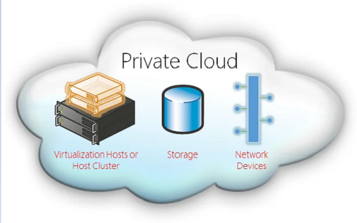

Private Cloud Explanation
Private cloud is also known as an internal cloud or corporate cloud.
- Provides computing services to a private internal network and selected users.
- Ensures high security and privacy through firewalls and internal hosting.
- Operational and sensitive data remain inaccessible to third-party providers.
- Examples: HP Data Centers, Microsoft, Elastra-private cloud, and Ubuntu.
Private cloud patterns:
- Dedicated: Hosted within a customer-owned data center and operated by internal IT departments.
- Community: Located at a third-party premises, managed by a vendor bound by SLAs.
- Managed: Owned by a customer but managed by a vendor.
Private Cloud Components:
- Virtualization
- Servers & Data Centers
- Networking
- Storage

Examples:
- Amazon Virtual Private Cloud (VPC)
- Microsoft Azure Stack
- OpenStack
- VMware Cloud on Premises
Advantages of Private Cloud:
- More Control
- Security & Privacy
- Improved Performance
- Predictable Usage
- Easy Customization
Disadvantages of Private Cloud:
- High Cost
- Restricted Area of Operations
- Limited Scalability
- Requires skilled personnel for maintenance